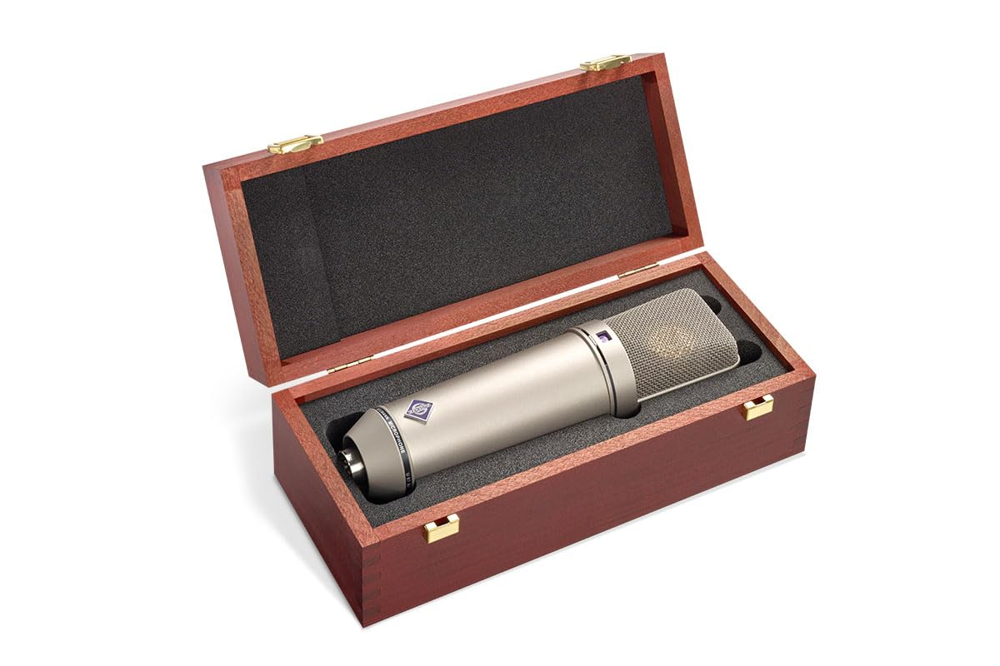
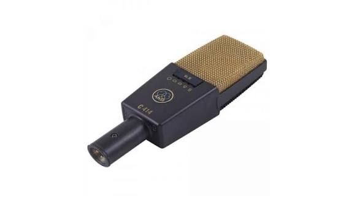
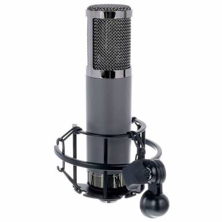
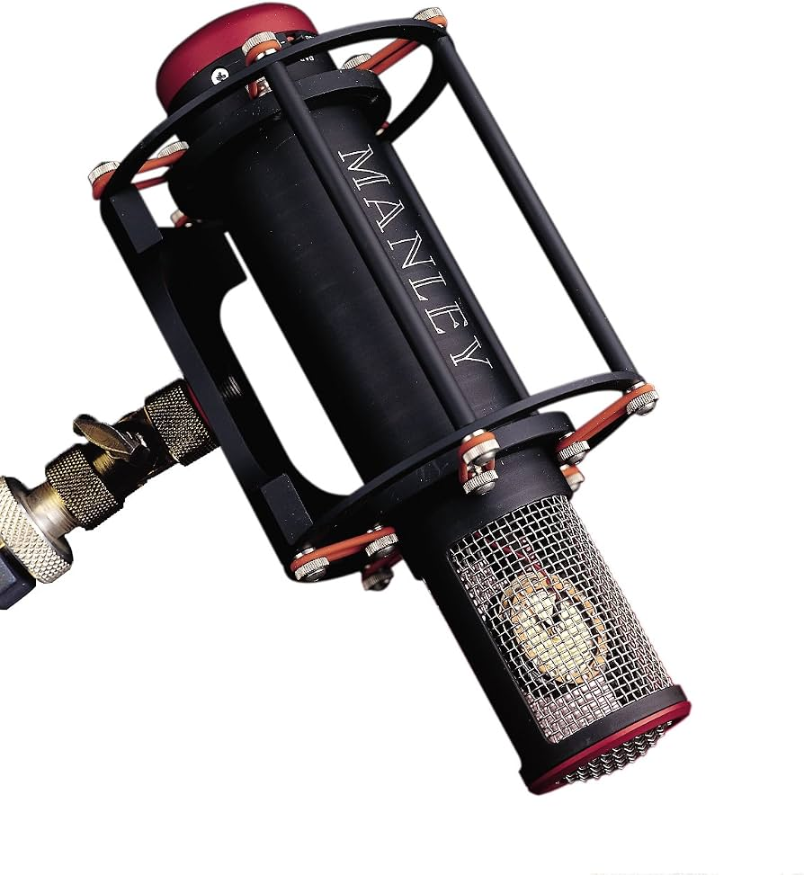

Productos
encuentra todo lo que busquen para tu home studio
MICRONOFOS

Neumann U 87 Ai
El rey indiscutible de los estudios comerciales para voces principales, locución y orquestas.
Características: Tres patrones polares (cardioide, omni, figura 8), atenuador de -10 dB, rango de 20Hz-20kHz y fabricación artesanal en Alemania. Ofrece un sonido cálido, balanceado y una claridad extrema en frecuencias medias y agudas.
Valor $3,750 USD

AKG C414 XLII
El micrófono multipatrón más versátil del mercado, ideal para pianos, guitarras acústicas, coros y overheads de batería.
Características: 9 patrones polares seleccionables, 3 niveles de atenuación (-6/-12/-18dB) y 3 filtros de corte de graves. Ofrece un realce de presencia en frecuencias altas que hace destacar las fuentes en la mezcla.
Valor $1,299 USD

Telefunken TF51
Voces principales de alta gama, guitarras acústicas, mandolinas y overheads de batería.
Características: Es un micrófono de tubo (valvular) que recrea el sonido clásico de los legendarios Telefunken ELA M 251 y AKG C12. Ofrece un patrón polar multipatrón (cardioide, omni, figura 8), una cápsula estilo CK12 terminada a mano y una válvula ECC81. Su sonido se caracteriza por unos agudos extremadamente suaves y sedosos.
Valor $1,895 USD.

Manley Reference Cardioid
El estándar moderno para voces principales en Pop, R&B, Rap y música urbana comercial.
Características: Diseñado exclusivamente con patrón polar cardioide, utiliza un circuito de tubo de vacío (válvula 12AT7) que aporta una riqueza armónica inigualable. Es famoso porque produce un sonido "listo para la mezcla": saca la voz hacia el frente con un brillo audaz, cristalino y una presencia imponente en las frecuencias altas, sin llegar a sonar estridente.
Valor $2,999 USD.
INTERFAZ DE AUDIO
Neumann U 87 Ai
El centro de control moderno de la mayoría de los estudios profesionales y comerciales.
Características:Conectividad Thunderbolt 3, conversión de "Clase Elite" con hasta 133 dB de rango dinámico, y preamplificadores con tecnología Unison (que cambian físicamente su impedancia para imitar consolas Neve o SSL). Cuenta con procesamiento HEXA Core (DSP) integrado, permitiendo grabar a través de plugins de compresión y ecualización legendarios con latencia cero, liberando por completo la CPU de la computadora.
Valor $2,899 USD
AKG C414 XLII
El micrófono multipatrón más versátil del mercado, ideal para pianos, guitarras acústicas, coros y overheads de batería.
Características: 9 patrones polares seleccionables, 3 niveles de atenuación (-6/-12/-18dB) y 3 filtros de corte de graves. Ofrece un realce de presencia en frecuencias altas que hace destacar las fuentes en la mezcla.
Valor $1,299 USD
Telefunken TF51
Voces principales de alta gama, guitarras acústicas, mandolinas y overheads de batería.
Características: Es un micrófono de tubo (valvular) que recrea el sonido clásico de los legendarios Telefunken ELA M 251 y AKG C12. Ofrece un patrón polar multipatrón (cardioide, omni, figura 8), una cápsula estilo CK12 terminada a mano y una válvula ECC81. Su sonido se caracteriza por unos agudos extremadamente suaves y sedosos.
Valor $1,895 USD.
Manley Reference Cardioid
El estándar moderno para voces principales en Pop, R&B, Rap y música urbana comercial.
Características: Diseñado exclusivamente con patrón polar cardioide, utiliza un circuito de tubo de vacío (válvula 12AT7) que aporta una riqueza armónica inigualable. Es famoso porque produce un sonido "listo para la mezcla": saca la voz hacia el frente con un brillo audaz, cristalino y una presencia imponente en las frecuencias altas, sin llegar a sonar estridente.
Valor $2,999 USD.